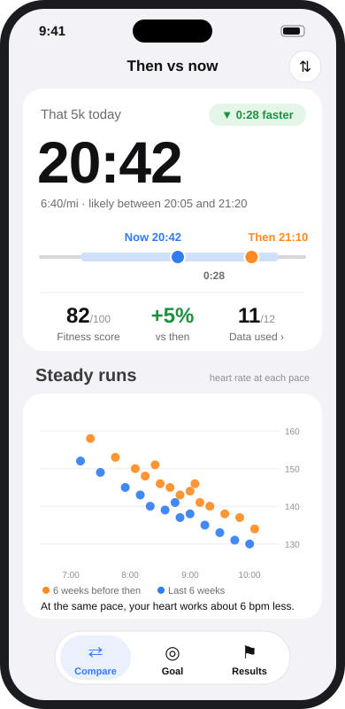
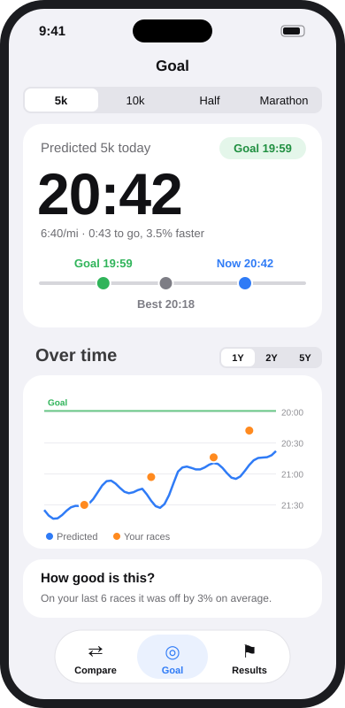
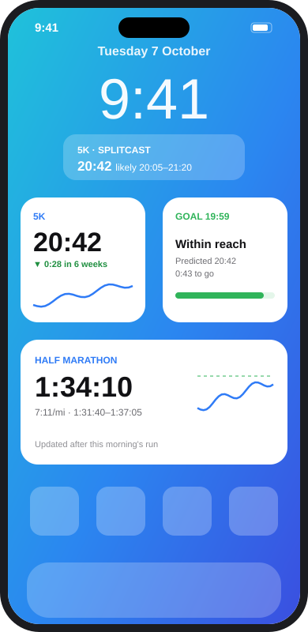

Splitcast compares your fitness now with the weeks before any past race, and tells you what you could run today. All from Apple Health, all on your iPhone.

Pick a race you've run. Splitcast looks at the six weeks before it and your last six weeks, and shows what's changed.
Your aerobic fitness, training and recovery in the six weeks before a past race or time trial.
The same markers over your last six weeks: VO2max, heart rate at each pace, power, sleep, resting heart rate.
Your race time scaled by how much your fitness has changed, with a likely range and an honest accuracy check.
Every number has a story behind it. Tap any marker to see the chart and the runs it came from.
Set a target time for 5k, 10k, half or marathon and watch your predicted time move towards it, week by week.

Home and Lock Screen widgets update after every workout you save, so your prediction is there when you check your phone.

Generic calculators assume everyone slows down the same way over longer races. Splitcast learns from yours.
Every marker was checked against real race results. It shows you how accurate it has been for you.
With races at two distances, Splitcast works out how you slow down with distance instead of using a textbook figure.
Climbing is counted as extra distance, so a hilly training block doesn't look like lost fitness.
Splitcast reads Apple Health and never writes to it. There are no accounts, no servers, no analytics and no tracking. Nothing is sent anywhere. Read the privacy policy.